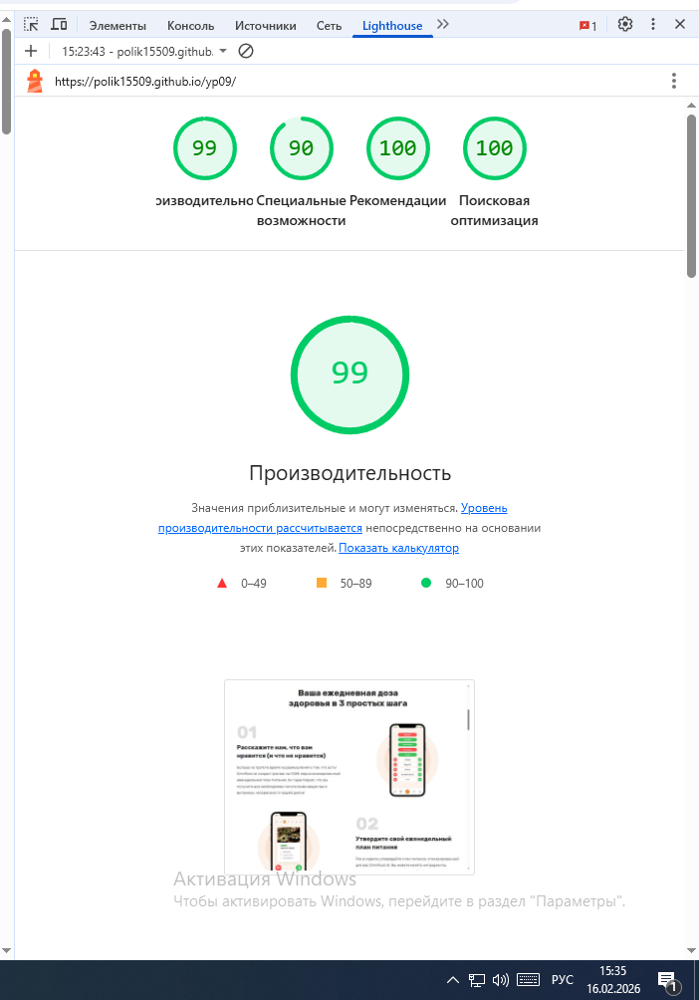
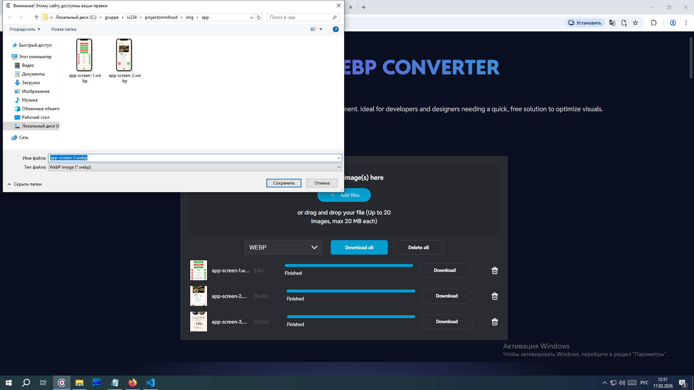
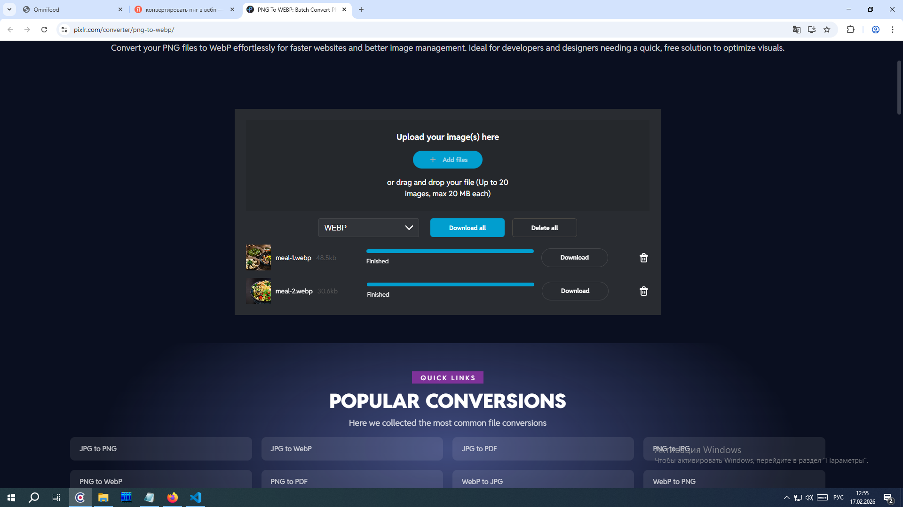

ДЕНЬ 1: Анализ и метрики производительности
| Метрика | До оптимизации | Цель |
|---|---|---|
| Performance Score | 89 | > 90 |
| FCP | 0,7 сек | < 1.8s |
| LCP | 2 сек | < 2.5s |
| CLS | 0,077 сек | < 0.1 |
| TBT | 0 сек | < 200ms |
После оптимизации

ДЕНЬ 2: Оптимизация изображений
Перевод в WEBP изображений
 